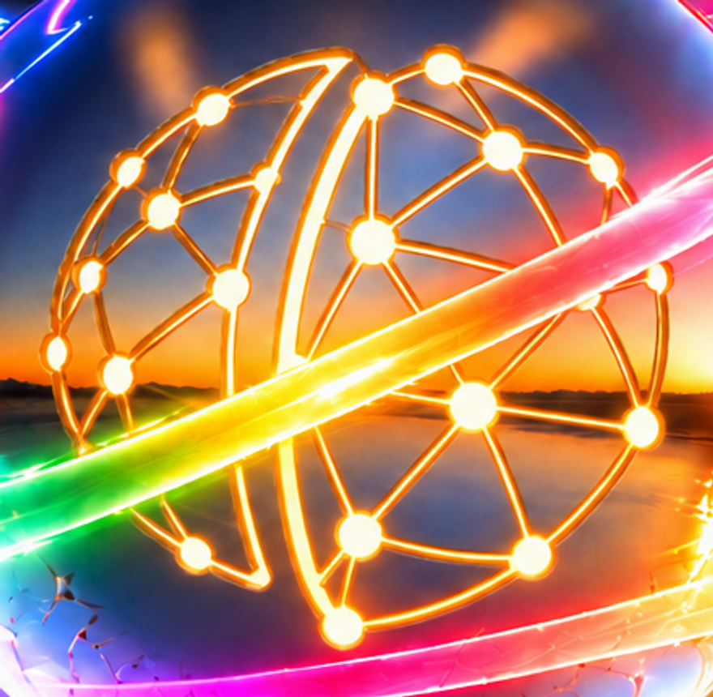
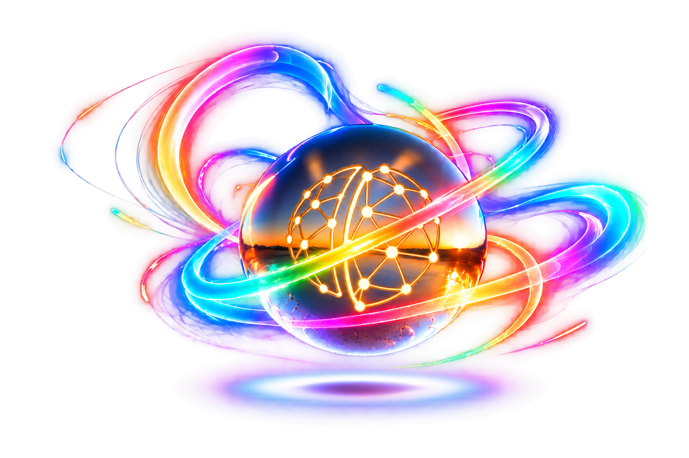
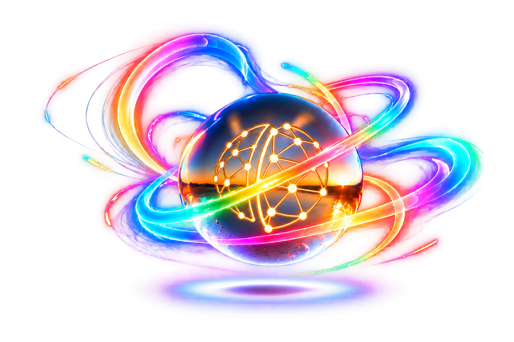

Gold-lit cutout · material review 02
Transparent candidate only. Geometry accepted; material treatment pending your review.
Light-filled node holes and channels, with metal depth at their cut edges. The current hero, cards and Git work remain paused.
Download review PNG · 3072×2048 RGBA

Material and crossing detail

Previous treatment

Closer view of node openings
Full transparent artwork

